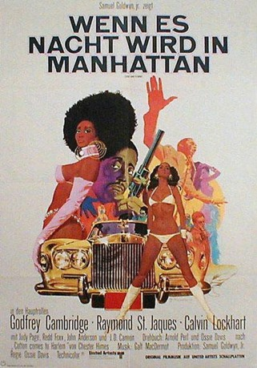

#8914 Wenn es Nacht wird in Manhattan
Alternativ: Cotton Comes to Harlem
 
 IMDB-Wertung: 6.6 / 10
IMDB-Wertung: 6.6 / 10  Metascore: 0
Metascore: 0 
Reverend O'Malley (Calvin Lockhart) hat seine schwarzen Brüder um satte 87.000 Dollar geprellt. Das ruft die beiden smarten Detectives Coffin Ed Johnson (Raymond St. Jacques) und Grave Digger Jones (Godfrey Cambridge) auf den Plan. Aber bevor die den diebischen Pfarrer dingfest machen können, wechseln die Scheinchen ganz unerwartet ihren Besitzer. - Süffisante Actionkomödie im hippen Harlem-Milieu.
Jahr: 1970
Dauer: 92 Minuten
FSK: 16
Land: USA Studio: United ArtistsTonspuren: DD2.0 - ,
Untertitel:
Auflösung: 1080p (1920x1080) Größe: 7157 MB
Genre: Action, Komödie
Regisseur: Ossie Davis
Drehbuch: Carin Pollak
Soundtrack: Galt MacDermot
Darsteller:
- Godfrey Cambridge als Grave Digger Jones
 Raymond St. Jacques als Coffin Ed Johnson
Raymond St. Jacques als Coffin Ed Johnson Calvin Lockhart als Rev. Deke O'Malley
Calvin Lockhart als Rev. Deke O'Malley- Judy Pace als Iris
- Redd Foxx als Uncle Budd / Booker Washington Sims
 John Anderson als Capt. Bryce
John Anderson als Capt. Bryce- Lou Jacobi als Goodman
- Eugene Roche als Lt. Anderson
 J.D. Cannon als Calhoun
J.D. Cannon als Calhoun- Cleavon Little als Lo Boy
- Teddy Wilson als Barry
- Arnold Williams als Hi Jenks
 Helen Martin als Church Sister
Helen Martin als Church Sister Leonardo Cimino als Tom
Leonardo Cimino als Tom Tommy Lane als '44'
Tommy Lane als '44'- Gilbert Lewis als 1st Black Beret
- Lisle Wilson als 4th Black Beret
- Anthony Chisholm als Black Plainclothesman
 Tony Brubaker als John Hill
Tony Brubaker als John Hill- Jonelle Allen als Secretary
 Walter Scott als Cowboy
Walter Scott als Cowboy- Vernee Watson als Woman
 Al Fann als Billie Boy
Al Fann als Billie Boy Albert Hall als Backround Detective (uncredited)
Albert Hall als Backround Detective (uncredited)- Melba Moore als Singer at the Apollo Theater (uncredited)
- Emily Yancy als Mabel
- Mabel Robinson als Billie
- Dick Sabol als Jarema
- Maxwell Glanville als Caspar
- Van Kirksey als Early Riser
- Irwin C. Watson als Minister
- Gertrude Jeannette als Sister Minnie
- Simm Landres als Luddy
- Turk Turpin als Dum Dum
- Wally Taylor als 2nd Black Beret
- William Pratt als 3rd Black Beret
- John D. Anthony als 5th Black Beret
- Jimmy Hayeson als Wino
- Lawrence Cook als 1st Young Black Man
- Vincent Hamill als Lead picket
- Rudy Townsend als 2nd Picket
- Ernest Marks als Man
- Alyce Webb als Angry Woman
- Louis Whitman als Chicken Man
- Kenneth Manigault als Traveling Man
- Harold Gaetano als Plainclothesman (uncredited)
- Stanley Greene als Chep (uncredited)
- Gene Lindsey als Luddy (uncredited)
- Frederick O'Neal als (uncredited)
- Lee Steele als Sidewalk Fur Coat Salesman (uncredited)
Datei: X:\1970\Wenn es Nacht wird in Manhattan (1970, FSK16, 1920x1080).mkv seit 07.05.2018
Festplatte: HD 1900-1970
 Es gibt insgesamt 24 Filme in der Gruppe '1970'
Es gibt insgesamt 24 Filme in der Gruppe '1970'